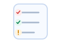

Website Page AuditorFind and review issues on any webpage.
YOUR FIRST CHECK
Spot page issues.
See where they happen.
Check a page, review findings, and highlight elements to inspect.
3Issues found
4Possible issues
1Review manually
8No issue found
Open issues by severityHigh 2Medium 4Low 2
Image needs alt textImages · High severity · Issue found
img.hero-bannerAdd descriptive alt text for screen readers.›Content overflows viewportResponsive · 375 × 812 · Possible issue
main .content-gridReview the highlighted element at this size.› Selected element · example.com/pagemain .content-gridHighlighted on the page · Suggested fix available
2 Click the extension icon
